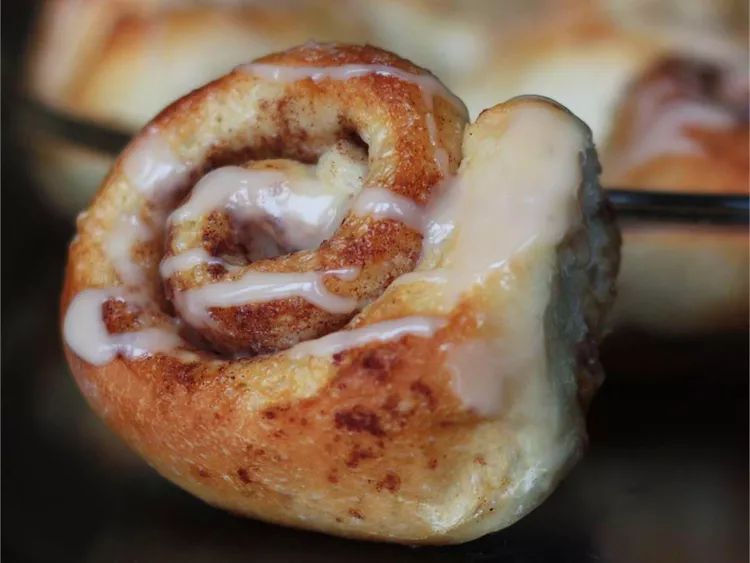

Cinnamon Roll Recipe

Description
This frozen bread dough recipe makes it super easy to make
cinnamon rolls. They're super tasty without all the work.
Ingredients
- 3 tablespoons melted butter, divided
- 1 loaf frozen bread dough, thawed
- 2/3 cup brown sugar
- 1 teaspoon ground cinnamon
- 1/2 cup chopped walnuts
- 1/3 cup heavy whipping cream
Icing:
- 2/3 cup sifted confectioners' sugar
- 1 tablespoon milk
- 1 dash vanilla extract
Steps
- Lightly grease two 9-inch round cake pans with melted butter
- Roll bread dough into 18x6 rectangle
- Mix brown sugar, walnuts, and cinnamon in a bowl
- Sprinkle over dough
- Roll dough into a log
- Cut log into 20 slices
- Preheat the oven to 175 degrees C
- Pour heavy cream over rolls
- Bake in the preheated oven until golden brown, about 25 minutes
- Stir confectioners' sugar, milk, and vanilla in a bowl until smooth
- Drizzle icing over warm cinnamon rolls
For more details, click here